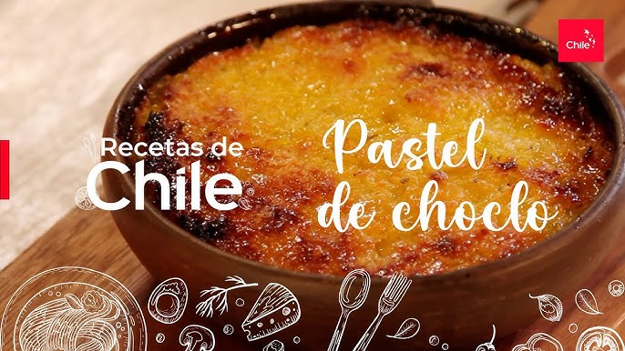

Quiénes Somos
Restaurante Sabores de Chile es un espacio gastronómico ubicado en Santiago, orientado a rescatar la cocina tradicional chilena mediante preparaciones elaboradas con ingredientes frescos, recetas típicas y una atención cercana para clientes nacionales e internacionales.
Nuestro objetivo es ofrecer una experiencia culinaria auténtica, donde cada plato represente parte de la identidad cultural del país, destacando sabores caseros, productos locales y presentaciones atractivas.
Especialidades de la Casa
- Curanto
- Preparación típica del sur de Chile que combina mariscos, carnes, papas y otros ingredientes cocidos lentamente para lograr un sabor intenso y tradicional.
- Asado al Palo
- Carne cocinada de forma lenta al calor del fuego, destacada por su textura suave y su característico sabor ahumado.
Promociones Especiales
- Lunes Chileno: 2 empanadas de pino + bebida por $5.500.
- Almuerzo Ejecutivo: 15% de descuento en platos de fondo entre 13:00 y 15:00 hrs.
- Promo Dulce: Postre gratis en la compra de un plato principal y bebida.
Plato de la Semana: Pastel de Choclo
El pastel de choclo es uno de los platos más representativos de la gastronomía chilena. Se prepara con una base de pino de carne, cebolla, huevo, aceitunas y, en algunas versiones, pollo, cubierto con una mezcla de choclo molido gratinada al horno hasta obtener una superficie dorada.
Esta receta destaca por su sabor casero, su aroma característico y su estrecha relación con la cocina tradicional del centro de Chile, siendo una preparación muy valorada tanto por familias chilenas como por turistas.

